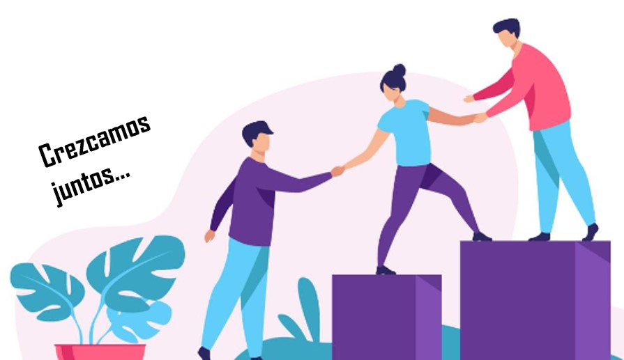

Sabemos que la universidad puede presentar desafíos académicos, pero no tienen por qué ser abrumadores. Estamos aquí para ayudarnos a superar esas dificultades y alcanzar nuestras metas educativas. El objetivo de este sitio web es el apoyo mutuo, donde compañeros que dominan ciertas materias te brindarán el apoyo que necesites y a su vez tú podrás ayudarlos económicamente.
